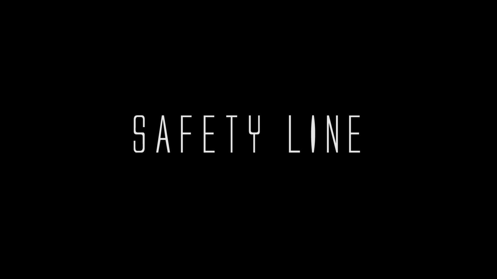

Safety Line

Front wheels and rear wheels do not have same trajectory. People are unaware of that, and some of them step into the dangerous area. We bring up this realistic problem in our ENGR100 project. Our proposed solution is to hang a package besides the vehicle. When vehicle turns, the package projects warning line onto the ground.
No laser line projector is within our budget. So, I design a 2.5D linkage to draw laser line with a laser pen. It is 2.5D because, besides one cylindrical joint (C), all other joints are planar joints (R and P).

Acknowledgement:
Cooperated with Xinyu Hong, Jiahao Sun and Dafeng Shen
Filmed by talented photographers Chris Zhuang and Yifan Lu.